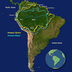

Amazon Rainforest

The "Lungs of the Earth" spans 5.5 million km² across nine countries. Home to 10% of known species, it produces 20% of Earth's oxygen. Contains 400 billion trees of 16,000 species.
Location: South America
Size: 5.5 million km²
Wildlife: Jaguars, macaws, pink dolphins